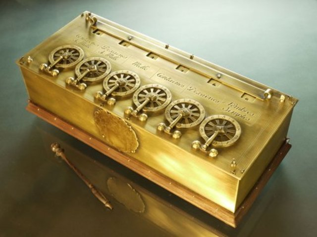
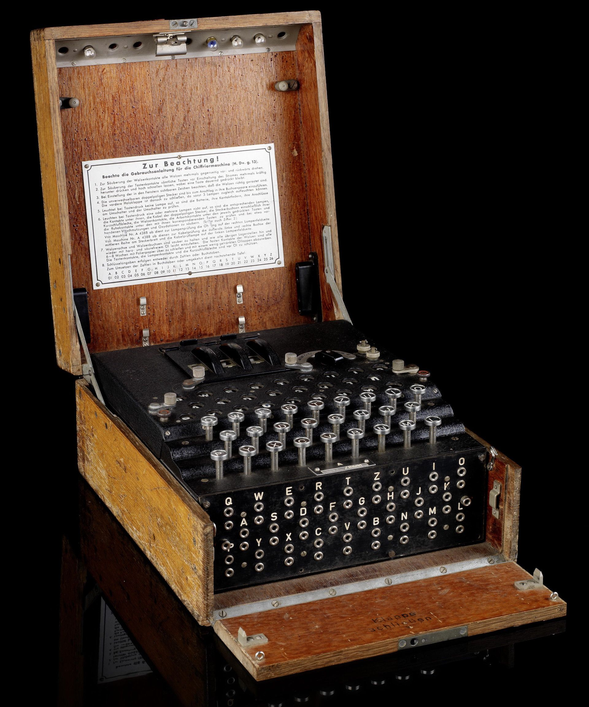
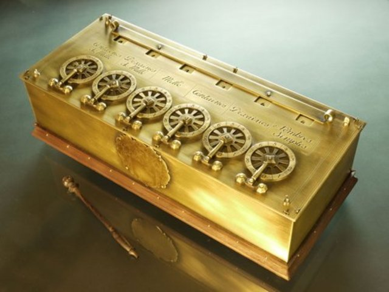
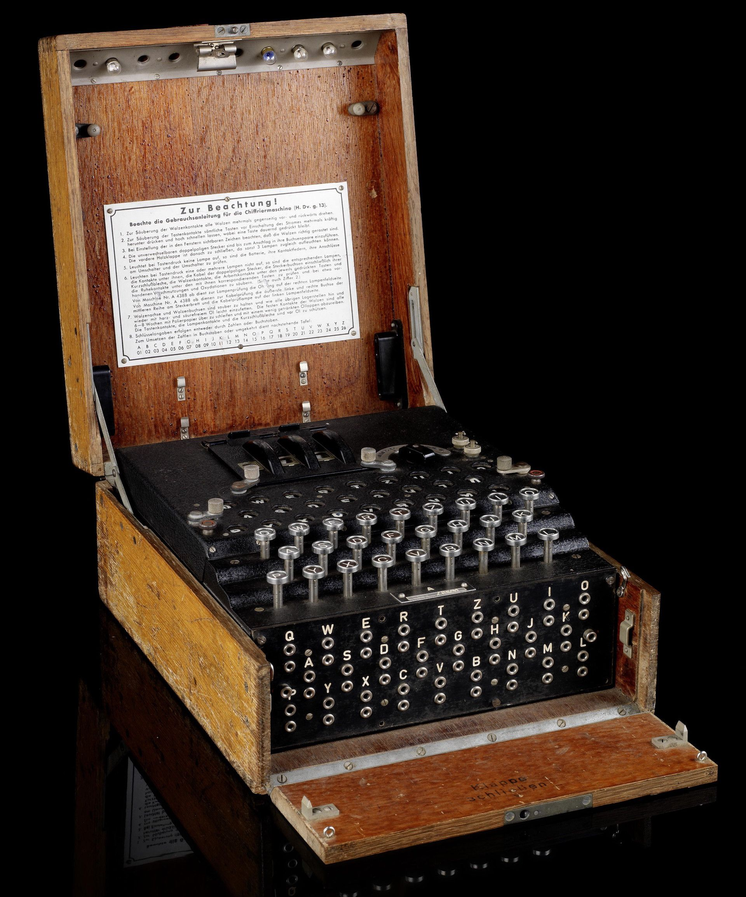

Antecedentes de la computadora
La historia de la computadora tiene su origen mucho antes de lo que pensamos. Las computadoras actuales son máquinas que, gracias a procesos como el Big Data Analytics, pueden procesar miles de datos en tan solo segundos. Sin embargo, los primeros antecedentes de las computadoras fueron elementos improvisados que surgieron debido a la necesidad de facilitarle al hombre ciertas tareas.
Determinar un solo creador y el primer ejemplar de computadora es un poco impreciso porque, a decir verdad, la historia de la computadora consiste en diversos aportes y colaboraciones por parte de diferentes referentes. Cada aporte, por más primitivo que fuera, fue parte importante de este proceso de génesis de la computadora.
Invención de los transistores
Un factor que influyó fuertemente en la historia de la computadora es la invención de los transistores en 1947, creados por los laboratorios Bell en Estados Unidos. Estos aparatos son interruptores eléctricos fabricados con materiales sólidos y sin necesidad del vacío.
Este descubrimiento fue fundamental para la fabricación de los primeros microchips, y permitieron el paso de los aparatos eléctricos a los electrónicos. Los primeros circuitos integrados (o sea, chips) aparecieron en 1958, fruto de los esfuerzos de Jack Kilby y Robert Noyce. El primero recibió el Premio Nobel de Física en 2000 por el hallazgo.
Otros inventos que influyeron en la creación de la computadora
En el inicio de la historia de la computadora, podemos destacar otros inventos que comenzaron a surgir por la definida necesidad del hombre de automatizar ciertas operaciones, sobre todo si de cálculos hablamos. Para pensar en los primeros esbozos y pioneros en la evolución de las computadoras, nos remontamos hacia el año 4.000 AC.
Entonces, ¿cuáles fueron los inventos que anunciaron la invención de la primera computadora? Además de los transistores, los siguientes inventos fueron grandes influencias:
Ábaco Sí, ese elemento tan conocido por todos, es parte de la historia de la computadora y fue uno de las primeras creaciones que surgieron para facilitarle al hombre tareas de cálculo en el año 4000 A.C.
Máquina de Pascal El matemático Blaise Pascal creó un sistema de engranajes con el objetivo de resolver cálculos de aritmética.

Máquina de cálculo diferencial En 1822, Charles Babbage, matemático y científico inglés, produjo la primera máquina de cálculo diferencial. Sin embargo, doce años después, Babbage marcó un antes y un después en la historia de la informática con la invención de una máquina analítica capaz de las cuatro operaciones aritméticas y de almacenar hasta 1.000 números de 50 dígitos en una memoria.

Máquina de Turing En la historia de la computadora, Alan Turing es considerado uno de los padres de la ciencia de la computación. En 1936, Turing creó la primera máquina capaz de almacenar y procesar información virtualmente infinita y marcó un gran hito en la línea de tiempo de la historia de la computadora.

Evolución de las computadoras
Desde los inicios de la humanidad, el hombre ha buscado formas de simplificar y optimizar sus actividades cotidianas. Esta necesidad ha dado lugar a la creación de numerosos inventos, entre los que se encuentran las computadoras.
Las primeras computadoras fueron creadas hace más de 2000 años, aunque en aquel entonces se trataba de dispositivos muy sencillos. Con el paso del tiempo y el avance de la tecnología, las computadoras fueron evolucionando hasta convertirse en los sofisticados dispositivos que son hoy en día.
Veamos el avance de las computadoras desde sus orígenes primitivos en el siglo XIX hasta las poderosas máquinas modernas que tenemos hoy en día:
• Evolución de las computadoras durante el Siglo XIX
El origen de la evolución de las computadoras modernas lo podemos encontrar en el año 1801, cuando el inventor y comerciante francés, Joseph Marie Jacquard, inventó un tejar que usaba tarjetas de madera para realizar diseños de tela automáticamente.
En 1821, el matemático inglés Charles Babbage desarrolló una máquina calculadora impulsada por vapor y en 1848 la hija del poeta Lord Byron, Ada Lovelace, escribió el primer programa de computadora de la historia.
Décadas más tarde, en 1853, el inventor sueco Per Georg Scheutz y su hijo Edvard diseñaron la primera calculadora de impresión del mundo.
Y en 1890 Herman Hollerith diseñó un sistema de tarjetas perforadas para ayudar a calcular el censo de Estados Unidos de ese año. Ese sistema le ahorró al gobierno alrededor de 5 millones de dólares y años de cálculos manuales.
• Evolución de las computadoras durante el Siglo XX
La evolución de las computadoras durante el siglo XX arranca a partir de los años 30, cuando Vannevar Bush inventa y construye el analizador diferencial, la primera computadora analógica y mecánica.
Durante esa misma década, en 1936, el científico y matemático Alan Turing, presenta un artículo llamado “Sobre los números computables, con una aplicación al problema de la decisión”. El concepto fundamental de lo que es una computadora parte de las ideas de Turing.
Un año más tarde, en 1937, el profesor de física y matemáticas de la Universidad Estatal de Iowa, John Vincent Atanasoff, propone crear la primera computadora completamente eléctrica.
En 1941 el inventor e ingeniero alemán Konrad Zuse termina el Z3, la primera computadora digital de la historia. En ese mismo año, Atanasoff y su estudiante ya graduado, Clifford Berry, crean la primera computadora electrónica digital llamada Atanasoff-Berry Computer (ABC).
En 1949 un equipo de la Universidad de Cambridge desarrolla EDSAC, la primera computadora práctica con programa almacenado.
Grace Hopper desarrolló el primer lenguaje de programación en 1953, llamado COBOL. Y en 1954, programadores de IBM publican un artículo que describe su propio lenguaje de programación, FORTRAN.
En 1968 Douglas Engelbart revela su prototipo de la computadora moderna que incluía un ratón y una interfaz gráfica de usuario (GUI).
En 1975, Paul Allen y Bill Gates inician su empresa de software, Microsoft. Y en 1976, Steve Jobs y Steve Wozniak cofundan Apple Computer y presentan Apple I, la primera computadora con placa de circuito único y ROM.
Casi una década después, en 1984, Steve Jobs presentó la primera computadora Macintosh, que incluía un teclado, ratón y una pequeña pantalla de 9 pulgadas. Su precio de lanzamiento fue de 2.495 dólares.
En noviembre de 1985, Microsoft lanza su sistema operativo Windows. Y en 1993, el microprocesador Pentium avanza en el uso de gráficos y música en las computadoras.
En 1999 se logra un gran avance con la creación del Wi-Fi, que inicialmente cubre una distancia de 91 metros.
Finalmente, en 2001 nace el sistema operativo macOS, en lugar del Mac estándar. En 2004 se lanza el navegador Mozilla Firefox 1.0, en 2005 Google compra Android y en 2009 Windows lanza al mercado Windows 7.
¿Por qué evolucionaron las computadoras?
Desde su invención, las computadoras han ido evolucionando a un ritmo sorprendente.
Esto se debe principalmente a la necesidad de los seres humanos de tener una máquina que les ayude a realizar cada vez más tareas de manera más eficiente.
La evolución de las computadoras se debe principalmente a los avances en la tecnología de los semiconductores, que han permitido que se fabriquen chips cada vez más pequeños y eficientes.
A medida que las computadoras se han ido haciendo más pequeñas, potentes y versátiles, se han convertido en una parte esencial de nuestras vidas.
Y eso es porque el objetivo de las computadoras es simplificar nuestras vidas y hacerlas más eficientes. Mientras el mundo cambia y se vuelve más complejo, las computadoras también deben evolucionar para mantenerse al día.
Se puede decir que la evolución de las computadoras se debe a tres factores: el aumento de la demanda, el avance de la tecnología y la competencia entre las empresas.
“La construcción de un ordenador cuántico no supone ningún problema… Sabemos cómo juntar las cadenas de las operaciones cuánticas sobre el papel y la forma en que acabarán proporcionándonos un ordenador cuántico, el problema está en trasladarlo al hardware real”
Stephen Hawking.
La historia de la computadora tiene su origen mucho antes de lo que pensamos. Las computadoras actuales son máquinas que, gracias a procesos como el Big Data Analytics, pueden procesar miles de datos en tan solo segundos. Sin embargo, los primeros antecedentes de las computadoras fueron elementos improvisados que surgieron debido a la necesidad de facilitarle al hombre ciertas tareas.
Determinar un solo creador y el primer ejemplar de computadora es un poco impreciso porque, a decir verdad, la historia de la computadora consiste en diversos aportes y colaboraciones por parte de diferentes referentes. Cada aporte, por más primitivo que fuera, fue parte importante de este proceso de génesis de la computadora.
Invención de los transistores
Un factor que influyó fuertemente en la historia de la computadora es la invención de los transistores en 1947, creados por los laboratorios Bell en Estados Unidos. Estos aparatos son interruptores eléctricos fabricados con materiales sólidos y sin necesidad del vacío.
Este descubrimiento fue fundamental para la fabricación de los primeros microchips, y permitieron el paso de los aparatos eléctricos a los electrónicos. Los primeros circuitos integrados (o sea, chips) aparecieron en 1958, fruto de los esfuerzos de Jack Kilby y Robert Noyce. El primero recibió el Premio Nobel de Física en 2000 por el hallazgo.
Otros inventos que influyeron en la creación de la computadora
En el inicio de la historia de la computadora, podemos destacar otros inventos que comenzaron a surgir por la definida necesidad del hombre de automatizar ciertas operaciones, sobre todo si de cálculos hablamos. Para pensar en los primeros esbozos y pioneros en la evolución de las computadoras, nos remontamos hacia el año 4.000 AC.
Entonces, ¿cuáles fueron los inventos que anunciaron la invención de la primera computadora? Además de los transistores, los siguientes inventos fueron grandes influencias:
| Sí, ese elemento tan conocido por todos, es parte de la historia de la computadora y fue uno de las primeras creaciones que surgieron para facilitarle al hombre tareas de cálculo en el año 4000 A.C. | ||
| El matemático Blaise Pascal creó un sistema de engranajes con el objetivo de resolver cálculos de aritmética. |  | |
| En 1822, Charles Babbage, matemático y científico inglés, produjo la primera máquina de cálculo diferencial. Sin embargo, doce años después, Babbage marcó un antes y un después en la historia de la informática con la invención de una máquina analítica capaz de las cuatro operaciones aritméticas y de almacenar hasta 1.000 números de 50 dígitos en una memoria. | |
|
| En la historia de la computadora, Alan Turing es considerado uno de los padres de la ciencia de la computación. En 1936, Turing creó la primera máquina capaz de almacenar y procesar información virtualmente infinita y marcó un gran hito en la línea de tiempo de la historia de la computadora. |  |
Evolución de las computadoras
Desde los inicios de la humanidad, el hombre ha buscado formas de simplificar y optimizar sus actividades cotidianas. Esta necesidad ha dado lugar a la creación de numerosos inventos, entre los que se encuentran las computadoras.
Las primeras computadoras fueron creadas hace más de 2000 años, aunque en aquel entonces se trataba de dispositivos muy sencillos. Con el paso del tiempo y el avance de la tecnología, las computadoras fueron evolucionando hasta convertirse en los sofisticados dispositivos que son hoy en día.
Veamos el avance de las computadoras desde sus orígenes primitivos en el siglo XIX hasta las poderosas máquinas modernas que tenemos hoy en día:
• Evolución de las computadoras durante el Siglo XIX
El origen de la evolución de las computadoras modernas lo podemos encontrar en el año 1801, cuando el inventor y comerciante francés, Joseph Marie Jacquard, inventó un tejar que usaba tarjetas de madera para realizar diseños de tela automáticamente.
En 1821, el matemático inglés Charles Babbage desarrolló una máquina calculadora impulsada por vapor y en 1848 la hija del poeta Lord Byron, Ada Lovelace, escribió el primer programa de computadora de la historia.
Décadas más tarde, en 1853, el inventor sueco Per Georg Scheutz y su hijo Edvard diseñaron la primera calculadora de impresión del mundo.
Y en 1890 Herman Hollerith diseñó un sistema de tarjetas perforadas para ayudar a calcular el censo de Estados Unidos de ese año. Ese sistema le ahorró al gobierno alrededor de 5 millones de dólares y años de cálculos manuales.
• Evolución de las computadoras durante el Siglo XX
La evolución de las computadoras durante el siglo XX arranca a partir de los años 30, cuando Vannevar Bush inventa y construye el analizador diferencial, la primera computadora analógica y mecánica.
Durante esa misma década, en 1936, el científico y matemático Alan Turing, presenta un artículo llamado “Sobre los números computables, con una aplicación al problema de la decisión”. El concepto fundamental de lo que es una computadora parte de las ideas de Turing.
Un año más tarde, en 1937, el profesor de física y matemáticas de la Universidad Estatal de Iowa, John Vincent Atanasoff, propone crear la primera computadora completamente eléctrica.
En 1941 el inventor e ingeniero alemán Konrad Zuse termina el Z3, la primera computadora digital de la historia. En ese mismo año, Atanasoff y su estudiante ya graduado, Clifford Berry, crean la primera computadora electrónica digital llamada Atanasoff-Berry Computer (ABC).
En 1949 un equipo de la Universidad de Cambridge desarrolla EDSAC, la primera computadora práctica con programa almacenado.
Grace Hopper desarrolló el primer lenguaje de programación en 1953, llamado COBOL. Y en 1954, programadores de IBM publican un artículo que describe su propio lenguaje de programación, FORTRAN.
En 1968 Douglas Engelbart revela su prototipo de la computadora moderna que incluía un ratón y una interfaz gráfica de usuario (GUI).
En 1975, Paul Allen y Bill Gates inician su empresa de software, Microsoft. Y en 1976, Steve Jobs y Steve Wozniak cofundan Apple Computer y presentan Apple I, la primera computadora con placa de circuito único y ROM.
Casi una década después, en 1984, Steve Jobs presentó la primera computadora Macintosh, que incluía un teclado, ratón y una pequeña pantalla de 9 pulgadas. Su precio de lanzamiento fue de 2.495 dólares.
En noviembre de 1985, Microsoft lanza su sistema operativo Windows. Y en 1993, el microprocesador Pentium avanza en el uso de gráficos y música en las computadoras.
En 1999 se logra un gran avance con la creación del Wi-Fi, que inicialmente cubre una distancia de 91 metros.
Finalmente, en 2001 nace el sistema operativo macOS, en lugar del Mac estándar. En 2004 se lanza el navegador Mozilla Firefox 1.0, en 2005 Google compra Android y en 2009 Windows lanza al mercado Windows 7.
¿Por qué evolucionaron las computadoras?
Desde su invención, las computadoras han ido evolucionando a un ritmo sorprendente.
Esto se debe principalmente a la necesidad de los seres humanos de tener una máquina que les ayude a realizar cada vez más tareas de manera más eficiente.
La evolución de las computadoras se debe principalmente a los avances en la tecnología de los semiconductores, que han permitido que se fabriquen chips cada vez más pequeños y eficientes.
A medida que las computadoras se han ido haciendo más pequeñas, potentes y versátiles, se han convertido en una parte esencial de nuestras vidas.
Y eso es porque el objetivo de las computadoras es simplificar nuestras vidas y hacerlas más eficientes. Mientras el mundo cambia y se vuelve más complejo, las computadoras también deben evolucionar para mantenerse al día.
Se puede decir que la evolución de las computadoras se debe a tres factores: el aumento de la demanda, el avance de la tecnología y la competencia entre las empresas.
“La construcción de un ordenador cuántico no supone ningún problema… Sabemos cómo juntar las cadenas de las operaciones cuánticas sobre el papel y la forma en que acabarán proporcionándonos un ordenador cuántico, el problema está en trasladarlo al hardware real”
Stephen Hawking.